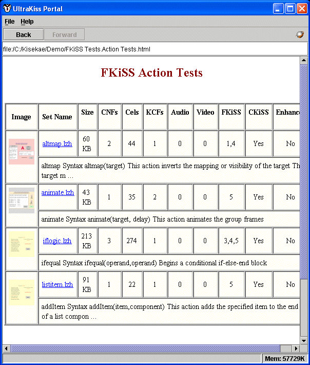
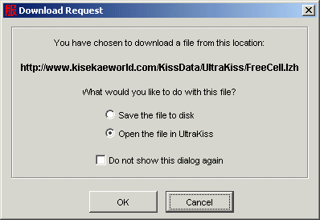

Welcome to the UltraKiss Portal documentation. To open an online book, choose a book from the Contents page in the upper left of the Help Viewer. Click the book icon to expand the book topics. Then, click a topic to view it.
The KiSS Portal is a limited web browser tool designed to support easy access and traversal of a web site for online access to KiSS applications. The UltraKiss Portal can display any web page that conform to HTML 3.2 specifications. HTML 3.2 specifications support images, frames, fonts and headings. Limited support for CSS style sheets is also provided. The UltraKiss browser does not support META tags or various web authoring tool extensions to the HTML language.
The KiSS Portal tool is invoked from the 'Open Portal' menu or toolbar commands. The portal will automatically open to the URL configured in the UltraKiss Options-KiSS-KiSS Web Site parameter. This web site parameter can also be specified as the third run time parameter on the UltraKiss program command line. This URL can reference a secure web site that requires user authentication for controlled access. UltraKiss will use your registered user code to authenticate to any secure web site.
.
Figure 1.
The UltraKiss Portal supports point and click navigation throughout the hosted web site. Clicking on any link that references an UltraKiss archive file type (LZH, ZIP, JAR) will invoke an automatic download of the archive file, similar to standard web browsers. UltraKiss will also automatically unpack LZH files that may have been packaged in a ZIP file for web downloads.
UltraKiss can automatically load the file if it contains a valid KiSS configuration element. A dialog as shown in Figure 2 can be used to save the downloaded file to your local disk if an automatic load is not desired.
Clicking on any link that references an external URL outside of the hosted web site may cause an automatic launch of the user's default web browser to display the URL. External pages are not displayed within the UltraKiss browser.

Figure 2.
Navigation buttons to move forward and backward and traverse the recently viewed page history list are provided on the browser toolbar. The globe symbol at the right of the toolbar is an animated image that shows when the UltraKiss Portal is actively trying to communicate with a web server.
The URL of the current page on display is shown beneath the portal toolbar.
The UltraKiss Portal will display any page that exists within the web site specified by the URL configured in the UltraKiss Options-KiSS-KiSS Web Site parameter.
Copyright (c) 2002-2023 William Miles